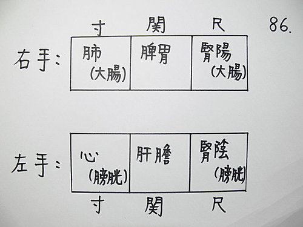
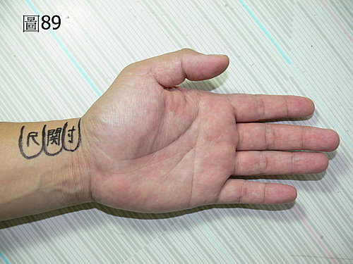

脈理醫理學 20：藥王脈學中標準的寸關尺臟腑對應圖
作者：陳建元
藥王脈學中標準的寸、關、尺臟腑對應部位，以《內經》中傳統的六部對應部位來看即可以。〈圖86、87、88、89〉。其中肺配大腸的意思，不是指大腸在這邊尋得，而是有時肺脈火旺，問之肺無問題，卻有便秘的大腸問題，即《內經》所謂的肺移熱於大腸也，大腸配在這邊的意思只是一種氣化位，氣化位的意思是一種功能上的問題，而不是大腸的實質位置。左手的心配小腸道理同上，但古代的小腸指的其實是小水，即前陰也，故把小腸兩個字改掉，改成膀胱，以免和現代所說的實質小腸相混淆也。


或問：
〝左手的心配小腸道理同上，但古代的小腸指的其實是小水，即前陰也，故把小腸兩個字改掉，改成膀胱，以免和現代所說的實質小腸相混淆也。〞不太懂，中醫小腸的功能不是心移熱小腸將食物加熱化成精（營養），小水－前陰（陰器？）－膀胱（泌尿系統？）我真的混淆了，什麼是氣化的意思（氣相通的意思嗎？）？是指前列腺或攝護腺的問題嗎？
答：
最常見的〝導赤散〞是治什麼的，是治小便赤澀的對不對？但古代是怎麼說明的？並不寫膀胱尿道，而是寫小腸火，或是心移熱於小腸，治小腸有火，便赤淋痛，此處的小腸其實是指膀胱，並不是指上面連接在胃，下面連接在大腸的那段小腸。當小腸（膀胱）有問題時，有問題的脈象一般會顯現在左尺上，當心臟有問題時，有問題的脈象一般會顯現在左寸上，但有時小腸（膀胱）有問題時，有問題的脈象卻不會顯現在左尺上，而是出現在左寸上，這種現象就是我們所說的心移熱於小腸，左寸雖不是小腸（膀胱）的主位，卻可以判讀出小腸（膀胱）的問題，所以左寸除了叫做心的「正位」之外，也叫做小腸（膀胱）的「氣化位」。「正位」和「氣化位」是藥王脈學中使用的名稱，用來區別兩者來源的不同。
或問：心脈寸外主心，內主檀中‥‥‥，是否三部有內外的判讀法？
答：以一部管一組臟腑即可，不必分內外，也不用分沉候臟，浮候腑，皆不驗也，太牽強附會，與實際狀況不符合，病在臟或病在腑，輔以臨床的表現症狀來判斷，即可分辨出來。
或問：
陳老師你好：在第20條裡提到正位與氣化位的問題，左寸是心的正位，也是膀胱的氣化位，右寸是肺的正位，也是大腸的氣化位，那是否有其它臟腑的氣化位在其它寸關尺？比如肺有氣化位嗎？膽有氣化位嗎？若有，那是要看哪邊？
就單一部脈，把到一個脈像有問題時，如何區分是正位代表的臟腑有問題，還是氣化位代表的臟腑出事？上面兩個問題還請老師解惑，謝謝！！
答：
上述的左寸也是膀胱的氣化位，右寸也是大腸的氣化位，是因為當初王叔和根據臨床現象所見，發現確實有內經所謂「移熱」的現象，所以提出來把膀胱也配在左寸，大腸也配在右寸的構想；但是這種作法，卻引起了後代景岳等醫家的質疑批評，認為這並不是《內經》原來的配置法（《內經》大腸小腸沒有配置在上焦），原本居於下焦的小腸（膀胱）大腸，為什麼會跑到上焦？想不通為什麼要這樣配？所以大加質疑？這個公案千年以來，一直延宕至今而無解，上面的解釋是替王叔和做解釋的。
其他的臟腑皆有氣化位，而且很普遍，但是沒有人會特別用氣化位這個名稱來稱呼它，這些內容非常的龐大，但是可以在歷代醫家的論述中找到這些概念。
譬如一個咳嗽的問題，依《內經》所言，咳嗽是肺病，所以右寸是正位。其他皆是副位。
我們從歷代醫書中，可以發現咳嗽一症，已經被歷代醫家總結成風寒咳嗽、風熱咳嗽、脾虛咳嗽、肝火咳嗽、心火咳嗽、腎虛咳嗽、血瘀咳嗽‥‥‥等類型。
現在把歷代醫論和脈診結合之後，六脈一把，用法就是這個樣子：
如果是肺脈浮緊弦→→→是風寒咳嗽，用麻黃湯→→→取自《傷寒論》。
如果是肺脈浮大數→→→是風熱咳嗽，用桑菊飲→→→取自《溫病條辨》。
如果是脾脈虛弱→→→是脾虛咳嗽，用四君子湯→→→取自李東垣《脾胃論》概念。
如果是肝脈洪大→→→是肝火咳嗽，用龍膽瀉肝湯→→→取自劉完素的〈寒涼論〉概念。
如果是心脈虛大→→→是心火陰虛咳嗽，用天王補心丹→→→取自丹溪的滋陰清火概念。
如果是兩尺虛弱→→→是腎虛咳嗽，用六味丸、八味丸→→→取自《金匱要略》和《醫貫》的混合概念。
如果是諸脈皆澀→→→是血瘀咳嗽，用血府逐瘀湯→→→取自王清任和唐容川的血瘀概念。
如果是諸脈皆黏→→→是毒滯咳嗽，用五味消毒飲→→→取自〈藥王脈學〉的黏脈是毒的概念。
如果是肺脈浮弦＋脾脈虛弱→→→是風寒咳嗽＋脾虛咳嗽→→→用麻黃湯＋四君子湯。→→→混合概念，幾組病機就取幾組藥。
如果是肝脈洪大＋心脈虛大→→→是肝火咳嗽＋心火陰虛咳嗽→→→用龍膽瀉肝湯＋天王補心丹→→→混合概念，幾組病機就取幾組藥。
以此類推‥‥‥，方隨證轉，千變萬化。
病機可以是1個、2個複合、3個複合、4個複合‥‥‥，乃至於全部，幾組病機就參合幾組藥。
這是一套非常犀利嚴密的古中醫用藥模式，只用了一個小小的寸關尺，就能把千年歷代的諸家各派學問學說，盡收入三指之中，融合成一爐。病機理法方藥，環環相扣，以簡馭繁，收則一粒芥子，放則一個世界，單單一個咳嗽，便可以自由的開出數百種不同的咳嗽組方、第二診中，只要在6個脈位中的，任何其中一個脈位產生變化，緊接著處方又是數百種的變化，而且每一張處方，皆是緊扣著病機而開方，而且又不用死背，這種複式病機的廣闊度，每次開方都是挾帶著千年歷代醫家的所有精髓絕招在內，進入這個模式之後，中醫是廣闊的，因為使用的語言和模式與歷代著名醫家完全相同，所以歷代幾百家的醫家都會變成是你的老師，他們一生所有的論述精華、歷代醫論，也都將複製灌輸到你的腦中，為你所用。這和目前狹隘的經方家或是時方家，背後幾百家的醫論，幾乎完全是架空歸零，只是格式化的僵守在幾本方書裡面揀方套病，是兩種形態完全不同的中醫。雖然對於一些西醫療效不佳的疾病，狹隘執方治病的經方家或是時方家也能發揮一些效果，醫好一些西醫無法醫治的疾病，但若能掌握這種正統的中醫脈證系統，使萬流歸一，歷代醫家合而為一，一同朝向同一個方向使力，所能發揮的範圍和威力，絕對不是僅僅這種程度，也絕對不是執方的經方家、時方家所能理解想像的。
或問：
陳老師你好：最近看到你的文章，文章中提到，以一部管一組臟腑即可，不必分內外，也不用分沉候臟，浮候腑，皆不驗也，太牽強附會，與實際狀況不符合，病在臟或病在腑，輔以臨床的表現症狀來判斷，即可分辨出來。這句話讓我想通很多中醫古籍的盲點。
這裡我想請教一下老師，有關在可以負責兩個臟腑（脾跟胃），臨床上脾虛，兼有胃熱很多，除了說以問診輔助之外，藥王脈學有無初步的區分方法（因為這兩種病機，脈會差蠻多的而且可能會掩蓋掉），同理可證 ，右尺（腎陽虛，兼有大腸濕熱），這種矛盾的病機，我們這種剛入臨床的醫師，除了問診之外，怎去要脈診區分？診所工作三個月，就像老師說的 ，脈診一定要成為我們的 indicator（指標；指示），不然…可能療效很差，多謝老師的指導。
答：
中醫裡自古雖然就使用陰陽五行的名稱，但陰陽五行是用來描述臨床的事實，一切還是要以實際的臨床事實現象為依歸才對，陰陽五行該被臨床實際事實所牽制，而不是把陰陽五行奉為一切，硬套入臨床中，亂解釋中醫一通，這種方式是不正確的，單純古書中的沉候臟，浮候腑等說法，一對照馬上知道與事實不相符，以說理來看待即可，活看即可，死套固執不通的是傻瓜。
這種相反的病機已經是脈外脈〈脈理醫理學第45條〉的範圍，意思就是說，基本上在脈象上是不會顯示出來的，要用醫理來推測，也就是脈理醫理學第 15.2條所說的把脈的第三個階段→→脈之變。
脈理醫理學第57.1～57.2條的二次正氣現象，就是提出來在解釋這個相反病機可以相夾的機理：
脾虛→→→代謝不正常→→→代謝廢物貯留→→→虛火燔灼→→→燔灼久積→→→虛火堆積到一個程度又累積成實火→→→脾虛與胃熱共存。
腎陽虛→→→正不充→→→氣少不能完全控制水濕→→→水濕代謝廢物貯留、剛開始偏寒濕→→→二次正氣現象虛火燔灼→→→燔灼久了之後，某部分的寒濕也變成濕熱了→→→腎陽虛和腎濕熱共存。
所以說脈法的第三個境界，就是進入研究脈外脈，也就是脈象之外的道裡，這些基本上都是比較深的醫理，研究出來規則之後，又歸回臨床之中，為脈學所用，用脈學來統攝中醫所有的學問，結合為一體，上述的情況，重點在問診，只要知道病程是久病，下藥時就要兼考慮這種現象， 所以在藥王脈學中，雖然把到的兩個人脈象是一模一樣，但知道病程的久遠不同之後，一個會偏向只依脈理來開藥，但另一個就會考慮病機因為時間的因素，會做更進一步的轉化，而把藥結合更深的醫理來開。到了脈外脈的階段，不但是四診合一，就像〈藥王脈學緣起〉這篇所說的，是四診、 醫理、藥理、症狀、證候、病症（病種、疾病）、治則、治法、藥方，以及各類辨證學問，這10項混合體的一氣融合貫通，而以六部脈象為主綱一氣貫穿。這種相反的病機，因為會互相掩蓋，用一般的口問中醫模式很難問出來，用脈理醫理學 47條的層脈方式也要花時間才會發現，最佳的方式，就是以正統的脈證模式來研究中醫，到了一個程度之後，很多書本中不記載的奧妙醫理，就會自然漸漸的領會出來，然後再用它更進一步的反過來指導臨床。
或問：
陳老師你好，不問則已，問了才發現可以獲得更多的臨床不解的道理。老師舉例一些臨床由虛轉邪實 ，經由正氣來復做為解釋 ，實在是佩服。不過想問老師的是除了有二次正氣轉化之外，有無可能病人本身就兼有脾虛以及胃熱（以右關脾胃舉例）？不知道是不是我觀念的誤差？老師提及的似乎是一個轉化過程，也就是說，脾虛到最後有可能轉為熱象（熱在脾or胃？？）而我想要問的是：有無病人直接就兼有脾虛and胃熱（也就是說未經二次正氣轉化）？若是有的話，以右關的怎去看待？？？是以五層脈嗎？？還是另有其方法？？而我在臨床上觀察到的在右關第三層所把到一種脈象，雖然它鼓動上來是有力兼滑 ，但是在鼓動初期是有點欲振乏力～～～這樣的脈象可以解釋為脾虛兼有胃熱嗎？？？還是得在加以問診分別～～因為這樣的脈象會讓我想到用升陽益胃湯～～～哀哀 ～不知道這些想法是不是我天馬行空亂想 ，有待老師指導啊！！～～～
答：
有無可能病人本身就兼有脾虛以及胃熱（以右關脾胃舉例）→→→會。譬如脾胃不好容易腹脹軟便的人，又喜歡吃辣椒，長久下來則兩種相反病機相夾。譬如消渴的人，連續一直吃大劑石膏，結果胃熱未退，倒是變成兼脾虛消化力變差了。
若是有的話，以右關的怎去看待？→→→問症是個方式，就是容易腹脹軟便，卻又食慾旺盛，善飢消穀這類的相反症狀。脈象是脈外脈，不容易一次抓到，但會發現上次明明有力，結果一清就空，或是明明無力，稍稍一補馬上變滑大化火，就要考慮是這種相反的相夾病機，然後第2～3次複診時再修正用藥的方向即可，這樣已經算很快抓到主題了，因為這不是一種容易解的問題。
而我在臨床上觀察到的，在右關第三層所把到一種脈像，雖然他鼓動上來是有力兼滑 ，但是在鼓動初期是有點欲振乏力～～這樣的脈像可以解釋為脾虛兼有胃熱嗎？→→→佐望診、聞診、按診查之。舌胖白齒痕是脾氣虛，說話字句的尾字聲音下降無力是氣虛，手臂的肌肉按按看，鬆軟無力是脾氣虛。若有上述諸證是脾虛兼胃熱，若無，鼓不起來欲振乏力是 脈理醫理學 33.12條黏脈所說的毒，是胃熱兼毒。
或问：老师好，根据20条小肠实为膀胱，那么西医解剖学中的小肠正位是在右关脾胃部吗，肾阳部的大肠是大肠的正位还是气化位。
答：西医解剖的小肠，依照临床表现来对照，正位在右关脾胃部和肾阳部。肾阳部的大肠是大肠的正位。
或問：老師好，根據20條小腸實為膀胱，那麼西醫解剖學中的小腸正位是在右關脾胃部嗎，腎陽部的大腸是大腸的正位還是氣化位。
答：西醫解剖的小腸，依照臨床表現來對照，正位在右關脾胃部和腎陽部。腎陽部的大腸是大腸的正位。
或問：
陳老師您好：末學提出淺見，圖中只有五臟五腑，所以上面還少了很重要的兩個，在我看的書（還未及漢後大家）中，只有《內、難、傷寒》有提，這二個就是三焦和心包，仲景論中有水分及血分。《難經》言及有名而無形，後代將無形解為空，而末學認為是無固定之形的意思。因為它們二個的範圍太廣，以現代醫學而言，三焦我認為是體液淋巴系統，心包則是血管內的血液循環系統。三焦為水分，心包為血分。一為陽，一為陰。所以左血右氣，右寸關尺為陽，所以火生土，土生金。左寸關尺為陰，所以水生木，木生火。《傷寒論》亦言，久病入三焦，同理亦入心包。而五臟五腑皆因三焦心包而得以交通氣血，所以三焦心包實在重要，就是因為重要，所以被秘了。
那如何分配三焦，就是右寸口脈，也就是寸關尺為三焦所候，寸關尺皆現同脈，如同洪或同滑，則是傷及三焦。同理心包也是如此，就是左寸口脈，也可說是左寸關尺，皆現同脈，則是傷及心包。
以上是末學的心得。不知可否，目的無它，希望對藥王脈學有助益。
答：
三焦的問題歷代吵很久，各種說法都有，有的是引經據典要強調它是真實存在的。但依我的看法，還是回歸務實的操作上重要，讓三焦泛指頭頂以下，生殖器以上，包括腦、胸、腹腔的內容物較妥當。這個意思是說，一種藏象提出來，必須要和臨床實務能聯繫，否則，就會變成僅是空頭學說，沒有實際上的功用。這一條先看一下：脈理醫理學15.33條 中醫解惑（二十三）。
五行是什麼東西？
當你只聽過「五行理論」的時候，會認為中醫的五行理論是真理，這是因為身在山中，看不出來是山，但當退到外太空來看的時候，整個山的輪廓則明顯了。相同的，退出中醫先入為主的觀點，以各種醫學的架構來看，就會發現五行理論不是一種「真理」，它僅是一套觀察後的「學說模型」。
各種古代醫學都建立在「觀察」，觀察後提出「學說和模型」，你會發現一個有趣的地方，相同都是人體，但各種古代醫學用來描述的模型卻不同，譬如藏醫建立在四大學說（土、水、火、風→→→再歸入龍、赤巴、培根三因學說），彝醫建立在六行（木、土、火、鐵、水、風），土家醫建立在三元（上元腦、心、肺；中元肚、腸、肝；下元腰子、養兒腸、精脬、尿脬）；一樣是八卦，彝族的八卦和我們長的不一樣（中原八卦是以黃河為中心畫成的，南邊熱為離為火；西邊高原為蕭瑟冷冽為肅殺；東邊溫暖為豐饒為生長為和緩；北邊為寒冷為冰霜雪水。但彝族在鳥蒙山、哀牢山、涼山、金沙江一帶，東南西北絕 對不是中原這種景色，故他們把八卦的對應方位整個改了，西北對著「風」、東南對著「石」，不再對應五行。）
你應該發現到了，八卦也不是絕對的真理，為什麼？因為很多民族對人體用上不同的體系來解釋，卻都一樣可以運作而不會出問題，請再看一下脈理醫理學 15.33條 中醫解惑（二十三）裡面那個魚體實驗，這裡面其實已經解釋了醫學的起源是起自「觀察和記錄」，裡面我也自己設立魚的「心系統」，並且講到這種「系統」，不一定要設立成『5』個，你要增減幾個都可以。 上面這些少數民族的醫學，正是體現出這種現象，觀查的一樣都是人體，你要描述這個「人體」，原始系統主系統不管怎麼設立都沒問題，只要「主系統」在臨床中發現不敷使用的時候，就再加配「子系統」來修正或補足「主系統」的缺陷和漏洞。這就是為什麼各種民族醫學系統不同，卻一樣可以正常運作的原因。有點像對人體的描述，反正就是那些東西，你要橫看、直看、由裡面看到外面、有外面看到裡面、或像西醫分成呼吸系統、循環系統、消化系統‥‥‥來看，這都不是問題，主系統出來後，不足的部分，再用「子系統」來補足或修正即可，如藏醫再補入七大物質基礎、三種排泄物‥‥‥；如彝醫再補入病根學說（邪、毒、傷三字為統整）、 窩病統治‥‥‥；如西醫再補入精神科、鬼神作祟不可解釋的部分，則借用教會這個區塊來補足（不要以為西方沒這些，歐洲一些正規神學大學，甚至有驅魔課程，美國總統就職，是按著「聖經」來宣誓的，不是按著「憲法」，美鈔中寫著一行字：IN GOD WE THUST我們相信上帝。我想，台灣人對宗教會自由轉彎，很現實的，沒實質好處的就丟在一邊了，怎麼可能在鈔票上寫我愛五府千歲，或總統拿《金剛經》宣示，不可能的。）中醫是一樣的，五臟系統是中心，病機系統是中心，可以統攝各種辨證系統，辨病系統、辨症系統，五臟系統又連接脈法系統，脈法系統又連接整個藥物學系統，構成 理、法、方、藥、治連貫一氣，脈法系統不足的部分，則用「子系統」醫理、醫則、外症、外證來補足，這樣構成整個中醫架構，藥王脈學的系統也是長這樣子。很多人中醫學不起來，這是因為一起手時對這些系統哪些是「主系統」，哪些是「子系統」沒摸清楚，或是以偏蓋全，以為《傷寒論》的辨證便能涵蓋全部，甚至杵在那邊以為《傷寒論》就是全部，當然學了數十年後，療效不佳，認為中醫只是一場大騙局。
那三焦、心包是什麼呢？我講白一點，這是因為中國人有「成雙成對」的習俗，也有12生肖的習俗，地支也是12，這在上述那些民族醫學中並非如此，他們可能1對2或2對1，這種參差現象，在中醫則看不到，譬如脾只是對土，不會去對土、水兩個，譬如肝只對木，不會去對金、木、土三個，但這種一對多的方式，在上述那些民族醫學中是存在的。三焦和心包，是為了遷就12這個數字，而後來加進去的「子系統」，雖有賦予他們一些概念，但基本上還是「虛位」的成分居大，就像我們的「副總統」，地位雖高，實質上是「虛位」，也就是不主事的意思，所以《難經》中告訴你「三焦無形」，就是這個緣故。在實務的操作上，三焦泛指頭、胸腹腔各種藏象功能，基本上就是一個「模糊概念」才是正解，很難說實質上是什麼東西，三焦為決瀆之官，當病人水腫的時候，右手脈（寸關尺）整個浮起，以肺脈最明顯，這可以說是三焦不利，決瀆失職；當病人水腫的時候，右手脈（寸關尺）整個沉緩，以脾脈腎脈最明顯，這也可以說是三焦不利，決瀆失職，第一種常見於感冒併發急性腎炎，病位主要在肺，第二種常見於慢性腎炎，病位主要在脾腎，那你說三焦是什麼呢？其實是不固定的，還是讓它存在著模糊概念反而較恰當，而且三焦實際上可歸回五臟的用藥，所以我兩手脈的分部中，不再寫入虛位的三焦，直接用五臟用藥使理法方藥連貫一氣。
「心包」更是如此，心包為心之宮城，代心行事，也是虛位系統，入「心」的藥，通通可以入「心包」，所以我也不再寫入心包。換言之，除非有特別的需要時才加以說明外，就是讓這些「虛位系統」通通回歸五臟的用藥，這樣才能和實務結合。
【引用請先來信告知徵求同意，若有涉及販售營利等商業行為，版權所有拷貝盜用必究。】
【藥王脈學講壇】http://blog.xuite.net/drjychen/twblog